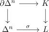
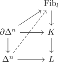
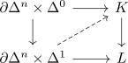
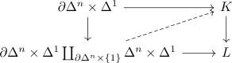
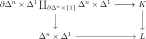

right fibration with contractible fibre as trivial fibration
Proposition
Let $f: K \rightarrow L$ be a right fibration (or left fibration) where each fibre is contractible. Then $f$ is a trivial fibration
Proof
w.l.o.g. we may assume that $f$ is a rightfibration. The dual case follows from applying the opposite simplicial set
Let

be a lifting problem.
$\Delta^n \rightarrow L$ constant at $l$
follows as

general case
Then by homotopy from identity to constant n of Delta^n we can find a homotopy
from $\sigma$ to $\mathrm{const}_{\sigma(n)}$
Then we can lift

by
Then since the fibre is by assumption contractible, we can find a lift

Then
is right anodyne (cf. boxtensor as right anodyne and component as right anodyne)
Hence it admits a lift

in particular restricting to $\Delta^n \times \{0\}$ gives a desired lift.